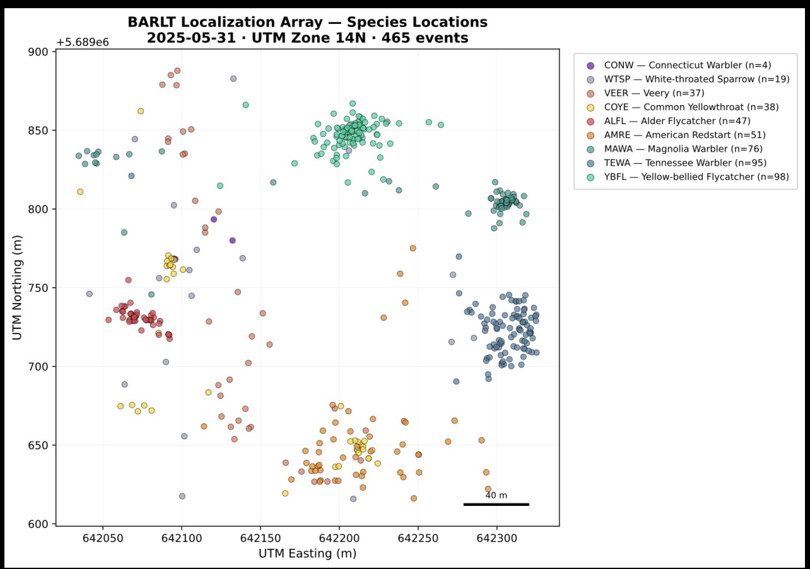
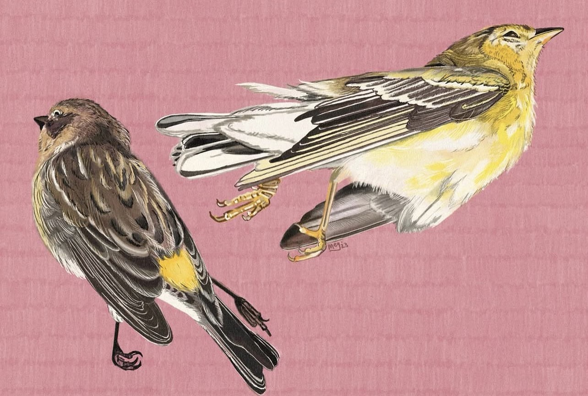
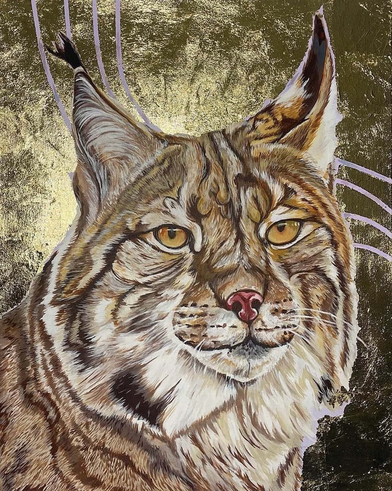
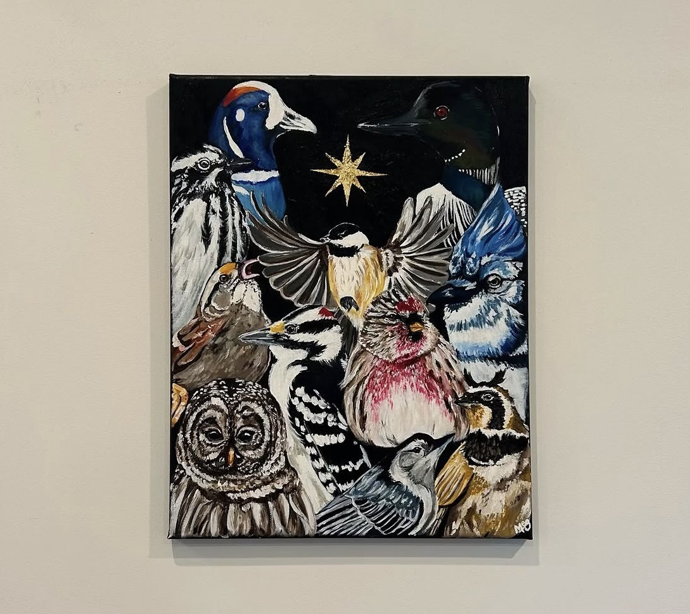
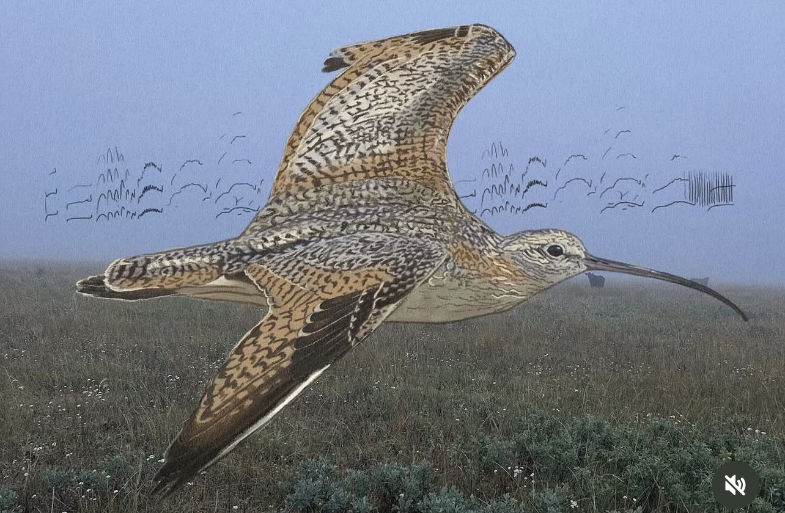

Hi! I'm Megan.
I'm a PhD student at the University of Alberta studying boreal waterbirds — how we detect them, how they respond to landscape change, and how that knowledge can guide large-scale conservation in Canada's boreal forest.
My work bridges bioacoustics, camera trapping, traditional point counts, and statistical modeling to understand what our monitoring methods actually capture — and what they miss.
Explore my research 🔬 Get in touch ✉️Bonjour! Je suis Megan.
Je suis doctorante à l'Université de l'Alberta, spécialisée dans les oiseaux aquatiques boréaux — comment les détecter, comment ils répondent aux changements du paysage, et comment ces connaissances peuvent orienter la conservation à grande échelle dans la forêt boréale du Canada.
Mon travail combine bioacoustique, pièges photographiques, inventaires par points d'écoute et modélisation statistique pour mieux comprendre ce que nos méthodes de suivi capturent — et ce qu'elles ratent.
Voir mes recherches 🔬 Me contacter ✉️Research
Recherche
The boreal forest holds roughly a third of the world's breeding birds, yet monitoring programs for waterbirds — waterfowl and shorebirds — lag far behind those for songbirds. My PhD asks a fundamental question: how well do our monitoring methods actually detect the birds we care about, and does that vary across habitats and species?
I am working to compare detection probability across autonomous recording units (ARUs), camera traps, and traditional point counts, to learn about how we can use passive monitoring to track waterfowl and shorebirds. Closing this gap matters for conservation planning across the boreal-prairie ecotone.
La forêt boréale abrite environ un tiers des oiseaux nicheurs du monde, mais les programmes de suivi pour les oiseaux aquatiques — sauvagine et limicoles — sont bien moins développés que ceux pour les passereaux. Ma thèse pose une question fondamentale : dans quelle mesure nos méthodes de suivi détectent-elles réellement les oiseaux qui nous importent, et cela varie-t-il selon les habitats et les espèces?
Je compare la probabilité de détection entre les unités d'enregistrement acoustique (ARU), les pièges photographiques et les inventaires par points d'écoute traditionnels, en utilisant des modèles d'occupation et N-mixture avec des décalages QPAD.
Acoustic Monitoring
Suivi acoustique
ARU-based detection probability estimation, HawkEars CNN recognizer calibration, and acoustic localization pipelines for multi-species boreal bird datasets.
Estimation de la probabilité de détection par ARU, calibration du recognizer CNN HawkEars, et pipelines de localisation acoustique pour des jeux de données multi-espèces.
Waterbird Monitoring
Suivi des oiseaux aquatiques
Bridging the gap between established songbird monitoring infrastructure (BAM, BBMP, ABMI) and boreal waterfowl and shorebird programs (WBPHS, PRISM).
Combler l'écart entre l'infrastructure de suivi des passereaux (BAM, BBMP, ABMI) et les programmes pour sauvagine et limicoles boréaux.
Spatial Modeling
Modélisation spatiale
Species distribution and density modeling using BAM v5 rasters, occupancy models, RSPFs, and QPAD-corrected GLMs across boreal Bird Conservation Regions.
Modélisation de la distribution et densité d'espèces avec les rasters BAM v5, modèles d'occupation, RSPF, et GLMs corrigés par QPAD à l'échelle boréale.
Wildfire & Climate
Feux de forêt et climat
Investigating how wildfire exposure and climate change shape boreal bird community composition, range shifts, and conservation prioritization.
Étude de l'effet des feux de forêt et du changement climatique sur la composition des communautés d'oiseaux boréaux, les déplacements d'aires et la priorisation de la conservation.
Wetland Health
Santé des milieux humides
Using waterbirds as bioindicators of wetland health across the boreal-prairie ecotone, integrating point count and ARU data for landscape-scale inference.
Utilisation des oiseaux aquatiques comme bioindicateurs de la santé des milieux humides, en intégrant données d'inventaire et ARU pour des inférences à grande échelle.
Aquatic Invasions
Invasions aquatiques
Prior work using stable isotope analysis to understand how invasive species (Chinese mystery snail, northern crayfish) restructure reservoir food webs.
Travaux antérieurs utilisant l'analyse des isotopes stables pour comprendre comment les espèces envahissantes restructurent les réseaux trophiques des réservoirs.
Methods & Tools
Méthodes et outils
Current Projects
Projets actuels
My PhD has two sides: some chapters ask how we monitor boreal waterbirds — developing and comparing methods, correcting for detection bias. Others ask what's actually happening to the birds — where they're shifting, what's driving change, and what they're telling us about the health of boreal wetlands.
Mon doctorat a deux volets : certains chapitres portent sur comment surveiller les oiseaux aquatiques boréaux — développer et comparer des méthodes, corriger les biais de détection. D'autres s'interrogent sur ce qui se passe réellement pour ces oiseaux — leurs déplacements, les facteurs de changement, et ce qu'ils nous révèlent sur la santé des milieux humides boréaux.
🔬 How we monitor
🔬 Comment surveiller
-
Detection Probability Across Survey Methods
Probabilité de détection selon les méthodes de suivi
Comparing how well ARUs, camera traps, and traditional point counts detect boreal waterfowl and shorebirds — and whether those differences matter for the conservation inferences we draw. Funded through NSERC Alliance Grant in collaboration with Biodiversity Pathways and Dr. Elly Knight. Co-supervised by Dr. Erin Bayne and Dr. Judith Toms
Comparaison de la capacité des ARU, pièges photographiques et inventaires par points d'écoute à détecter les sauvagines et limicoles boréaux — et si ces différences influencent les conclusions de conservation. Financé par une subvention Alliance du CRSNG en collaboration avec l'ABMI.
Bayne Lab / U of A ABMI CWS-PRA -
Acoustic Localization of Boreal Birds (BARLT)
Localisation acoustique des oiseaux boréaux (BARLT)
Using spatially-distributed ARU arrays to localize individual birds in 3D space, combining HawkEars CNN detections with OpenSoundscape localization algorithms (Lapp et al. 2023).
Utilisation de réseaux d'ARU distribués spatialement pour localiser des oiseaux individuels en 3D, en combinant les détections CNN de HawkEars avec les algorithmes de localisation d' OpenSoundscape (Lapp et al. 2023).

OpenSoundscape HawkEars Methods paper -
LeConte's Sparrow Habitat Selection & Occupancy
Sélection d'habitat et occupation du Bruant de Le Conte
Dual-framework analysis (QPAD GLM and RSPF) of LeConte's Sparrow habitat selection across peatland landscapes, plus occupancy modeling using the Boreal Birds Monitoring Program (2016-ongoing; Point Counts and ARU data) WildTrax dataset across boreal Manitoba and Saskatchewan.
Analyse à double cadre (GLM QPAD et RSPF) de la sélection d'habitat du Bruant de Le Conte dans les tourbières, et modélisation de l'occupation à partir de WildTrax.
Publication goal Peatlands
🌍 What's happening to the birds
🌍 Ce qui arrive aux oiseaux
-
Boreal Waterbird Range Shifts
Déplacements d'aires des oiseaux aquatiques boréaux
Documenting how boreal waterfowl and shorebird distributions are shifting in response to climate change — using long-term survey data to understand which species are moving, where, and how fast. The boreal is warming faster than almost anywhere on Earth, and we don't yet have a clear picture of what that means for waterbirds.
Documentation des déplacements des distributions de sauvagines et limicoles boréaux en réponse aux changements climatiques — en utilisant des données de suivi à long terme pour comprendre quelles espèces se déplacent, vers où, et à quelle vitesse.
Climate change Species distributions BAM data -
Wildfire Effects on Boreal Waterbirds
Effets des feux de forêt sur les oiseaux aquatiques boréaux
Wildfire is the dominant natural disturbance in the boreal, and its frequency and severity are increasing. This chapter asks how waterbird communities respond to fire — across species, time since burn, and fire severity — and what that means for conservation planning in a landscape that is burning more.
Les feux de forêt sont la perturbation naturelle dominante dans la forêt boréale, et leur fréquence et sévérité augmentent. Ce chapitre examine comment les communautés d'oiseaux aquatiques répondent aux feux — selon les espèces, le temps depuis le feu, et la sévérité.
Disturbance ecology Fire regimes Community composition -
Waterbirds as Wetland Health Indicators
Oiseaux aquatiques comme indicateurs de la santé des milieux humides
Boreal wetlands are among the most carbon-dense ecosystems on the planet, yet we have limited tools for monitoring their ecological condition at scale. This chapter develops waterbird community metrics as practical bioindicators of wetland health across the boreal-prairie ecotone — connecting bird monitoring to broader ecosystem assessment.
Les milieux humides boréaux comptent parmi les écosystèmes les plus riches en carbone, mais nous disposons de peu d'outils pour surveiller leur état écologique à grande échelle. Ce chapitre développe des métriques de communautés d'oiseaux aquatiques comme bioindicateurs pratiques de la santé des milieux humides.
Bioindicators Wetland ecology Boreal-prairie ecotone
Tools & Code
Outils et code
I build open-source tools in R and Python to solve real problems in acoustic and ecological workflows. Reproducible code, transparent methods.
🦅 HawkEars Validator (R Shiny)
A lightweight Shiny app for rapid QA/QC of CNN-based bird acoustic recognizer outputs. Go through clips, view spectrograms, listen to audio, and record structured validations (yes / no / unsure) to a traceable CSV.
View on GitHub🎛️ Acoustic Localization Pipelines (Python + R)
Multi-species HawkEars/OpenSoundscape acoustic localization scripts (using Frontier Labs Bar-LT with localization firmware) including threshold calibration methodology for boreal species.
📊 WildTrax Data Pipelines (R)
Refactored data pipelines merging ARU and point count project exports from WildTrax, resolving type inconsistencies and building reproducible workflows for CWS-PRA analyses.
All my code on GitHubJe développe des outils open source en R et Python pour résoudre de vrais problèmes dans les flux de travail acoustiques et écologiques. Code reproductible, méthodes transparentes.
🦅 HawkEars Validator (R Shiny)
Une application Shiny légère pour valider rapidement les sorties d'un recognizer acoustique CNN. Conçue pour combler un véritable manque : HawkEars produit des centaines de détections par déploiement ARU, mais il n'existait pas de moyen simple de parcourir les extraits, visualiser les spectrogrammes, écouter l'audio et enregistrer des validations structurées (oui / non / incertain) dans un fichier CSV traçable.
Voir sur GitHub🎛️ Pipelines de localisation acoustique (Python + R)
Scripts de localisation acoustique multi-espèces HawkEars/OpenSoundscape pour le projet BARLT, incluant une méthodologie de calibration des seuils pour 18 espèces boréales et des prairies.
📊 Pipelines de données WildTrax (R)
Pipelines de données refactorisés pour fusionner les exports de projets ARU et points d'écoute de WildTrax, avec des flux de travail reproductibles pour les analyses du SCMO-RPP.
Tout mon code sur GitHubPublications
Publications
Peer-reviewed articles and popular science writing. Full list on Google Scholar.
Articles scientifiques et articles de vulgarisation. Liste complète sur Google Scholar.
-
Community trophic structure within reservoirs changes in the presence of invasive Chinese mystery snail (Cipangopaludina chinensis) and northern crayfish (Faxonius virilis)
La structure trophique communautaire dans les réservoirs change en présence de l'escargot mystère chinois et du crayfish du Nord
-
The first documented occurrence and life history characteristics of the Chinese mystery snail, Cipangopaludina chinensis (Gray, 1834) (Mollusca: Viviparidae) in Alberta, Canada
Première occurrence documentée et caractéristiques du cycle de vie de l'escargot mystère chinois en Alberta, Canada
-
Edgar, M.R., et al. (2022) — Nature Alberta [magazine article]
In preparation / In review
En préparation / En révision
-
LeConte's Sparrow habitat selection across peatland landscapes: a dual-framework analysis
Sélection d'habitat du Bruant de Le Conte dans les paysages de tourbières : une analyse à double cadre
About Me
À propos
I'm a wildlife biologist and PhD student in Dr. Erin Bayne's lab at the University of Alberta. My PhD sits at the intersection of methodology and conservation: the question driving everything is whether we can trust our monitoring data to reflect reality — and if not, how do we fix it?
I'm also affiliated with Environment and Climate Change Canada's Canadian Wildlife Service Prairie Region, where I contribute to the Boreal Bird Monitoring Program. I live in the Beaverhill Biosphere Reserve and serve on its board — a region I care deeply about and where conservation and community intersect.
Outside of research, I love running, skiing, and backpacking (type 2 fun), building interactive R apps, and collaborating on open science. You'll often find me outside with binoculars, wondering whether that call was an Ivory-billed Woodpecker or wishful thinking 😉
Je suis biologiste de la faune et doctorante dans le laboratoire du Dr Erin Bayne à l'Université de l'Alberta. Mon doctorat se situe à l'intersection de la méthodologie et de la conservation : la question centrale est de savoir si nous pouvons faire confiance à nos données de suivi pour refléter la réalité — et sinon, comment y remédier.
Je suis également associée au Service canadien de la faune de la région des Prairies d'Environnement et Changement climatique Canada. Je vis dans la Réserve de biosphère des Beaver Hills et siège à son conseil d'administration.
En dehors de la recherche, j'aime courir, skier et randonner (plaisir de type 2), développer des applications en R, et collaborer sur des projets de science ouverte.
Affiliations
Affiliations
- Bayne Lab, University of Alberta
- Weston Family Boreal Research Fellow (2026–2027)
- Alberta Biodiversity Monitoring Institute (ABMI)
- Environment & Climate Change Canada, CWS-PRA
- Boreal Avian Modelling (BAM) Project
- Beaverhill Biosphere Reserve (Board member) 🌾
Datasets I use
Données que j'utilise
- Boreal Bird Monitoring Program (BBMP)
- Waterfowl Breeding Population & Habitat Survey (WBPHS)
- PRISM shorebird monitoring
- WildTrax — ARU & point count platform
- BAM v5 density surfaces
Visual Art
Art visuel
Outside of research I'm a visual artist — follow my work on Instagram @megahfauna. Unsurprisingly, a lot of it involves birds and boreal landscapes.
En dehors de la recherche, je suis artiste visuelle — suivez mon travail sur Instagram @megahfauna. Sans surprise, beaucoup de mes œuvres représentent des oiseaux et des paysages boréaux.




Contact
Contact
Interested in collaborating, chatting about boreal birds, detection methods, or open science tools? I'd love to hear from you.
Intéressé(e) par une collaboration, une discussion sur les oiseaux boréaux, les méthodes de détection ou les outils de science ouverte? Je serais ravie d'échanger.